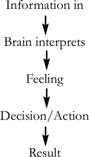
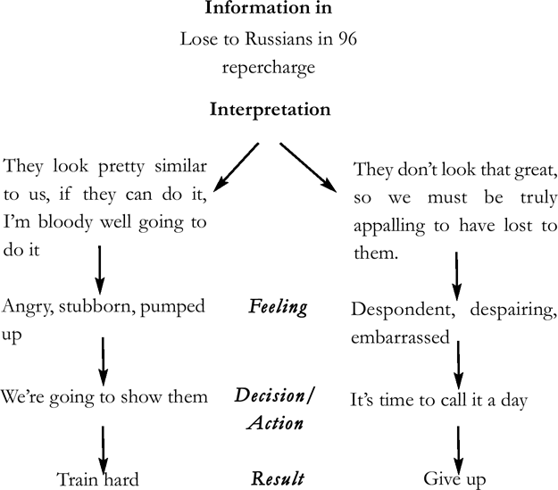

Bullshit filters: ignoring unhelpful information
Ben: “There’ll be plenty of evidence that you can’t do it and plenty of people saying you can’t do it. You just need some really good bullshit filters.”
Chapter summary
Negative comments, negative thoughts and negative interpretations will drain your energy and throw you off course. Use ‘bullshit filters’ to filter out unhelpful information and focus on what’s useful.
Why do we need bullshit filters?
Because:
1a.Bullshit beliefs create poor performance.
1b.Bullshit beliefs make it much harder to build useful beliefs.
How do we build bullshit filters?
2a.Don’t talk bollocks to Basil.
2b.Accept the facts, challenge the negative interpretation.
2c.Find a better interpretation.
2d.Use bullshit as emotional fuel.
•How many times have you got carried away or blown something out of proportion? “Oh no, I made one spelling mistake; they are going to fire me.”
•How many times have you been told, “you can’t”, “you shouldn’t”? “No-one from round here gets that kind of job, don’t be daft!”
•How many times have you been labelled? Perhaps your teacher called you lazy or your parents called you clumsy or a classmate called you stupid.
Instead of laughing away our negative thoughts or other people’s unhelpful comments and moving on, sometimes, we let them stick and start to accept them as unarguable truths.
We might sort through our bedroom cupboards and think, “Why on earth have I kept that pair of purple socks all these years?”, yet we rarely do that with the unhelpful thoughts clogging our heads.
Ben and the crew worked hard to develop bullshit filters – ways of getting rid of the negative thoughts and feelings that would get in the way of reaching Gold. Why was this so important? Why not just stick to building useful beliefs as described in the beliefs chapter?
Section one: Why do we need bullshit filters?
There were two reasons – firstly because bullshit beliefs create poor performance and secondly because bullshit beliefs make it much harder to build useful beliefs:
1a.Bullshit beliefs create poor performance
Ben: “Bullshit thoughts make you feel rubbish. In 1998 we were painfully aware that we only had 24 months. We didn’t have the time or the energy to waste on bullshit.”
Without getting bogged down in the complexities of neuroscience, research shows that information from our five senses enters the brain a bit like water draining into a river. The river then wends its way through our head and our mind interprets the information. The way we interpret it makes us feel a certain way about it, which, in turn, makes us decide what to do, and then we take some form of action.

Have you come across the term ‘rubbish in, rubbish out’? If you put poor quality meat into a sausage machine you’ll get poor quality sausages; it’s the same with us. Bullshit information in or bullshit interpretation means bullshit performance. Here are a couple of examples:
| Example one | Example two | |
| Information in | British crew lose to Russia in 1996 Olympics | Your colleagues say “this product is rubbish” |
| Interpretation | For four years I gave it everything and I’m still not good enough, I still can’t beat them | I’m wasting my time trying to sell it |
| Feeling | Despondent, despairing, embarrassed | Bored and unmotivated |
| Decision/Action | Give up | Half hearted selling |
| Result | End of rowing career | No sales, no bonus |
1b.Bullshit beliefs make it much harder to build useful beliefs
Another reason why bullshit filters are so important is that letting in bullshit makes it much harder to build useful beliefs. You know how a river carves a deep channel, which makes it more difficult to divert the water to follow another direction? In the same way, the more we let information flow along an unhelpful neural pathway the stronger our unhelpful belief gets. We end up forgetting that it’s just an opinion, just an interpretation and act as if it is a universal truth. The more we feel certain, the more we become resistant to thinking something different, something useful.
I have a friend who works in a Further Education College which runs adult literacy classes. One of the biggest challenges for the tutors is the negative beliefs the adult students have about their competence. Years and years of being told – or telling themselves – that they are ‘stupid’ have taken their toll. The students accept this massively unhelpful opinion as fact and struggle to believe that they can learn and improve.
Section two: How to build bullshit filters
So, if bullshit can have such a huge negative impact, how did the crew create bullshit filters and how can we copy them? Just knowing how the brain works – knowing the flow from information in, interpretation, feeling, action, to result – is really helpful, but there are also four simple strategies we can steal from the Olympic crew’s kit bag to build powerful bullshit filters that protect our progress.
The crew’s four strategies for building bullshit filters were:
2a.Don’t talk bollocks to Basil
2b.Accept the facts, challenge the negative interpretation
2c.Find a better interpretation
2d.Use bullshit as emotional fuel
2a.Don’t talk bollocks to Basil
The crew kept away from bullshit whenever they could. Lots of bullshit comes from other people so that meant avoiding unhelpful people in the first place or – if that wasn’t possible – avoiding certain topics of conversation, or filtering out what they said.
Ben: “When Fred joined the group he brought with him a few Oxford Brookes sayings including ‘don’t talk bollocks to Basil’. I have absolutely no idea who coined the phrase or who the original Basil was, but what it meant was don’t share stuff with people you shouldn’t be talking to. Focus on people who are of interest to you, people who matter. Focus on who or what will make the boat go faster. Anything else is simply talking bollocks to Basil.”
Our loved ones might give well-intentioned, but massively unhelpful advice when they don’t want us to get hurt. Our friends and colleagues might give us unhelpful tips because they don’t appreciate our context. For example, Ben was grateful that Steve Redgrave focused solely on his own crew and didn’t get involved in other crews:
Ben: “I have massive respect for Steve Redgrave, at Sydney he had four Gold medals and was about to get his fifth, but when it comes to our crew he might as well be my mother’s stepmother’s grandmother’s aunt, quite frankly.”
It is usually within your control to stop talking bollocks to Basil, what about when Basil won’t stop talking to you? Ben and the crew were cheek by jowl with ‘Basils’, right up until the day of the final.
Ben: “We shared a flat in the Olympic village with the rowing four; we were good mates. On training camps I’d play cards most nights with Steve and Matt, but I knew that they believed we couldn’t do it. There were conversations with my family, and with Isabella, my wife, where I had to filter out what was being said.”
Although Ben never explicitly asked people to shut up, many people got the message. He would listen passively, but not comment, change the conversation or walk away at the first opportunity.
Not only might you be weakening your self-belief by talking bollocks to Basil, but in some instances you might be helping your competitors to strengthen theirs. There was one crucial occasion where Ben was forced to talk to Basil, and simply worked to reduce the fallout. When Britain lost to Australia in the 2000 Sydney Olympic heats it meant the crew had to face the ‘repercharge’. The repercharge is where the losers from the heats have to race against each other to secure a place in the final – only the first and second place crews go through. Ben and Fred also had to face a press conference.
Ben: “We’d never done a press conference and hadn’t had any media training, but we just kept in mind not to talk bollocks to Basil. We didn’t dwell on how angry we were – we didn’t want the Aussies to know how fired up we were. We certainly didn’t explain to the press that the Aussies were in trouble because we’d rowed so badly and they’d only beaten us by a second and a half. We just tried to lull them into a false sense of security by going, ‘ooh, the Aussies will be tough’ while inwardly going, ‘we are going to absolutely nail you’.”
2b.Accept the facts, challenge the negative interpretation
Ben and the crew didn’t challenge facts – for example they lost the 1996 repercharge in the Atlanta Olympics and they couldn’t wave a magic wand and change the stark reality – but they absolutely challenged unhelpful interpretations about what had happened. For instance, some people told Ben he had only ever lost and he would continue doing so. He appreciated that this was just an opinion in the same way that when the judges give their feedback on the X Factor it’s just opinion, when your boss tells you you’re not ready for promotion, it’s just opinion. When the voice in your head tells you you’re not good enough, it’s just opinion.
Many of us don’t think about the difference between fact and interpretation and that can be dangerous – opinion can all too easily feel like fact, because we feel certain about it. We confuse a feeling of certainty with something being true when the two are completely independent. For example, have you ever felt absolutely certain that you left your keys on the table and in fact you have them in your pocket? Have you ever felt absolutely sure that you sent an email when all you ever did was draft it?
How did the crew know the difference between useful and negative interpretations? By asking that core question, ‘will it make the boat go faster?’ (i.e. will this interpretation make the boat go faster?) If the answer was ‘no’ then they’d keep challenging the bullshit until it lost its power.
| This means you can’t do it. | Really? we’re still We good. screwed up one race, |
| You’ve never won before, you can’t win now. | Says who? My ergo scores are good enough. |
| You can’t turn things around in two years. | What would happen if we did? |
The crew spent a lot of time on team discussions – to the point where other crews remarked on it. Challenging negative interpretations was a vital part of that debate. How can you copy this idea in your life – perhaps put it on your weekly team meeting agenda or your personal to do list? It’s very simple and very powerful.
2c. Find a better interpretation
As the saying goes, every cloud has a silver lining. The crew believed there was always a useful interpretation; they just had to find it. Remember the example we used earlier, of the crew losing to the Russians in the 1996 repercharge? What might be a different interpretation of that?’

Both interpretations make total sense don’t they? It’s not that one is right and one is wrong. I’m sure you could think of many other possible interpretations too. The interpretations drive totally different results. Most people, most of the time give their brain a free rein around interpretations – they let the ‘water’ dribble along the path of least resistance. It doesn’t mean the thinking is any more logical or any more right, it is just the lazy option.
The crew didn’t allow negative interpretations to creep in. They remained perfectly rational and logical (well, they tried to!). They were just very careful to choose useful interpretations. They actively encouraged water to flow down the reasons why we are going to win route and filtered everything else out as bullshit. The crew asked themselves, “How will this make the boat go faster?” We need to ask ourselves ‘how will this make my boat go faster?’ or ‘how can I use this?’ to uncover useful interpretations that will propel us forwards.
2d. Use bullshit as emotional fuel
Ben’s bloody-mindedness comes up in pretty much every chapter! Here is another example. When people made disparaging comments or doom and gloom predictions Ben would use it to fire his “I’ll show you” motivation.
Ben: “Externally I’d be polite, (I hope!) Internally I’d be going, ‘la, la, la, whatever. I am going to damn well show you.’ The key was not reacting to them, but instead using it.”
One of the crew even kept a special box. He’d write things down which people said that pissed him off. He’d open the box when it came to racing and used the comments to pump himself up. In other words it became more emotional energy to strengthen his belief.
How can we make sure this kind of energy drives us forwards rather than chewing us up? Would a box help you, or a journal to write your emotions down? Or perhaps a significant photo pinned on your fridge or kept in your wallet?
Conclusion
We need filters to protect ourselves from unhelpful bullshit and to grow strong, positive beliefs. There are lots of Basils out there. Who are yours? Who will give you unhelpful opinions that get in the way of your goal? Avoid them, or learn to filter out their poor opinions so you can stay on track.
Sometimes the Basils are obvious, but we need to watch out for the subtle ones too – such as friends who don’t want us to waste time or to get hurt.
Often we are the worst culprit – ‘Basil’ is that doubting voice in our own head. Facts are facts, we can’t change them, but we absolutely can change our interpretations. When we find an interpretation which isn’t useful we need to let it go! When we find a more useful one we’ll accelerate more quickly and smoothly towards our goal.
Now we’ve got the mindset that will help us to achieve our goals, but how do we actually get to work on our goal? The next chapter is called ‘make it happen’.